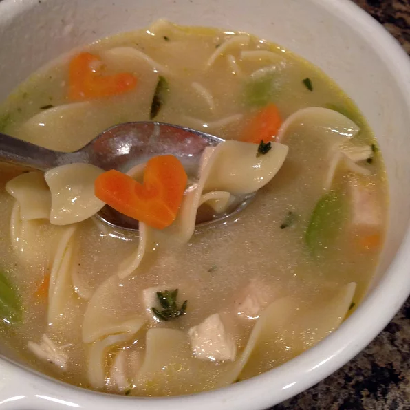

Steve's Chicken Noodle Soup

Description
Easily made, this is a wonderfully flavorful chicken noodle soup that will cure any common disease and make your guests happy.
Ingredients:
- 3 tablespoons vegetable oil
- 2 onions, diced
- 6 stalks celery, diced
- 6 carrot, diced
- ¾ tablespoon chopped fresh rosemary
- ¾ tablespoon chopped fresh tarragon
- ¾ tablespoon chopped fresh thyme
- ¾ tablespoon chopped Italian flat leaf parsley
- 4 quarts low-fat, low sodium chicken broth
- 3 ½ cups cubed skinless, boneless chicken breast meat
- 1 (16 ounce) package egg noodles
- salt and pepper to taste
Steps:
- In a large skillet over medium heat, cook onions in oil until translucent. Stir in celery, carrot, rosemary, tarragon, thyme and parsley and cook, covered, until vegetables are soft, 5 to 10 minutes.
- Transfer vegetable mixture to a large pot and pour in chicken broth. Simmer over low heat, covered, for 30 minutes.
- Stir in chicken breast pieces and egg noodles and simmer, covered, 30 minutes more. Season with salt and pepper.